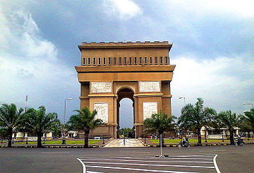
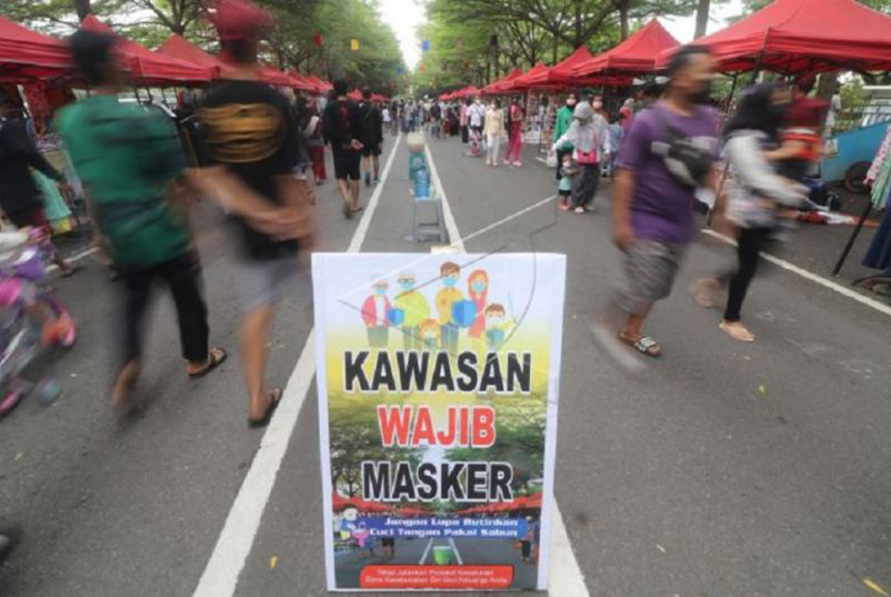

Monumen Simpang Lima Gumul
Monumen Simpang Lima Gumul atau biasa disingkat SLG (bahasa Jawa:
ꦩꦺꦴꦤꦸꦩꦺꦤ꧀ꦱꦶꦩ꧀ꦥꦁꦭꦶꦩꦒꦸꦩꦸꦭ꧀, translit. Monumèn Simpang Lima Gumul)
adalah salah satu bangunan yang menjadi ikon Kabupaten Kediri yang
bentuknya menyerupai Arc de Triomphe yang berada di Paris,
Prancis.

Menarik nya Monumen inii
Tugu ini sebenarnya merupakan ikon kota Kediri. Kediri berhasil
menarik wisatawan untuk melihat replika monumen di Prancis karena
bentuknya yang mirip dengan monumen L’Arch De Triomphe. Yang cukup
menarik, monumen ini dibangun untuk mengenang kejayaan Kediri di
masa lalu. Struktur bangunan yang megah mengundang banyak orang
untuk mengunjungi kawasan Simpang Gumul ini

Bagaimana keadaan di sekitar Simpang Lima Gumul?
Kawasan monumen ini tidak pernah sepi pengunjung di malam hari,
karena di sekitar monumen banyak terdapat pedagang kaki lima yang
berjejer di area Pasar Tugu.Pada hari sabtu dan minggu pagi,
kawasan ini juga ramai oleh pengunjung yang berolaraga lari pagi
(jogging), pengunjung yang rekreasi, maupun pengunjung pasar
Sabtu-Minggu di Tugu.
Home